Conforto, tranquilidade e a poucos passos da Praia das Campas.
Reservar pelo WhatsAppLocalizado na Praia das Campas, em Tamandaré, o Chalé das Campas oferece um ambiente acolhedor para quem deseja descansar, aproveitar o litoral pernambucano e viver momentos especiais com a família ou amigos.
Com uma estrutura completa, o chalé dispõe de quartos confortáveis,
cozinha equipada, área de lazer e uma vista deslumbrante para o mar.
É o lugar ideal para quem busca tranquilidade e contato com a natureza.
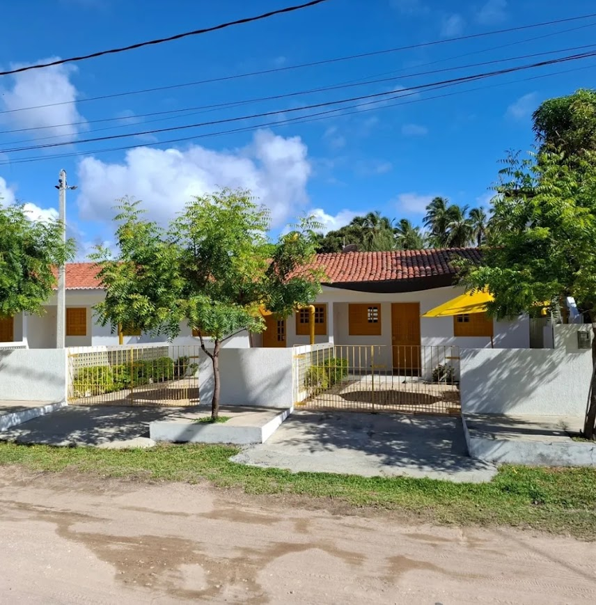
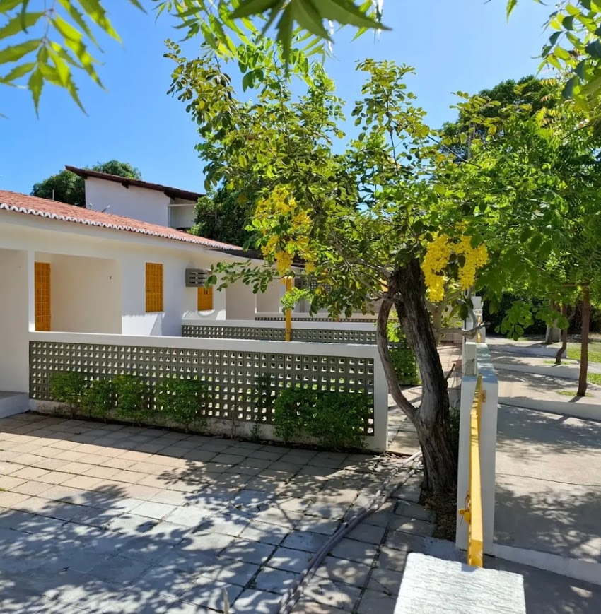
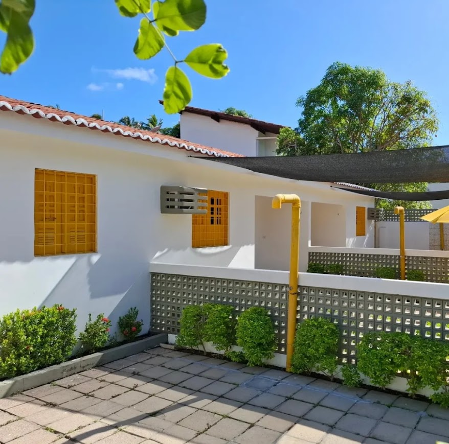
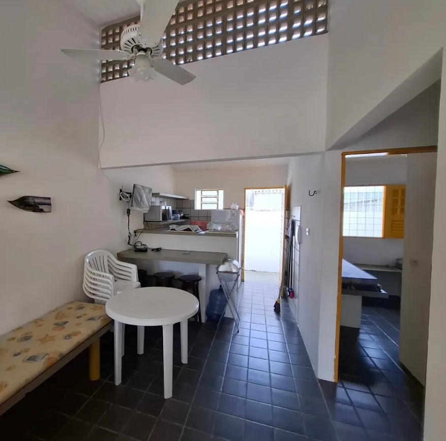
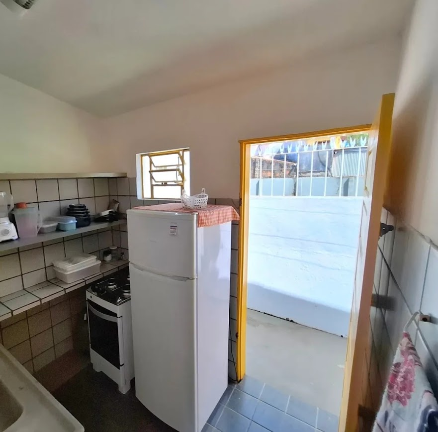
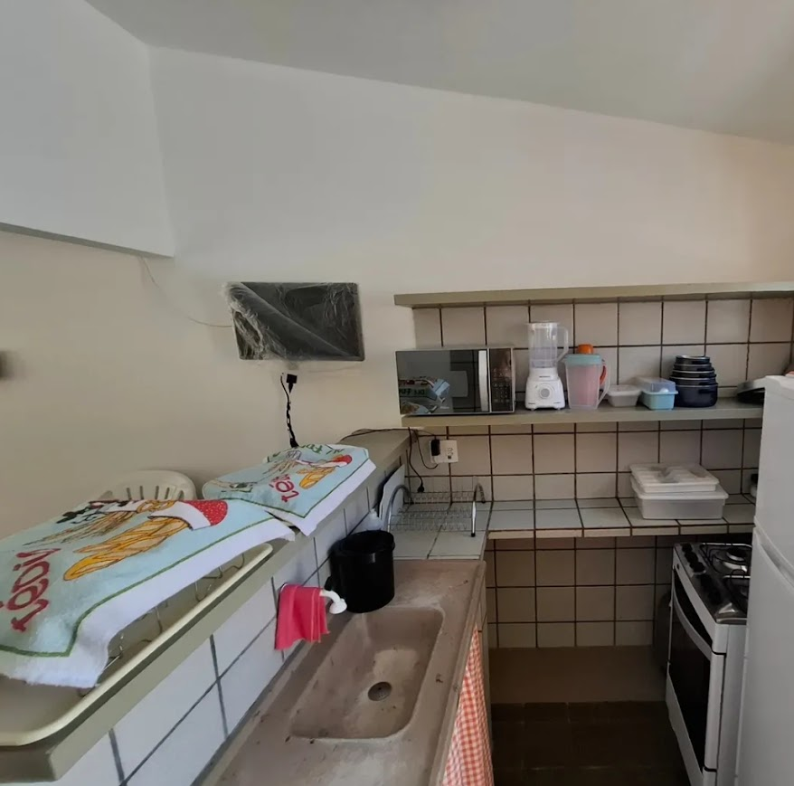
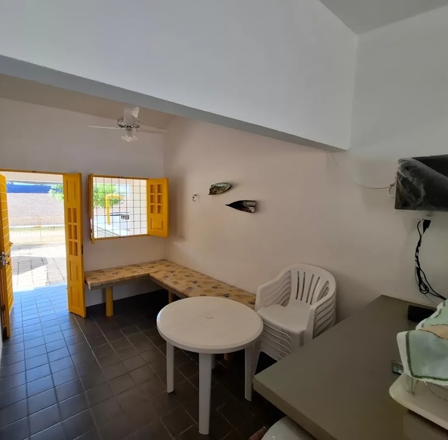
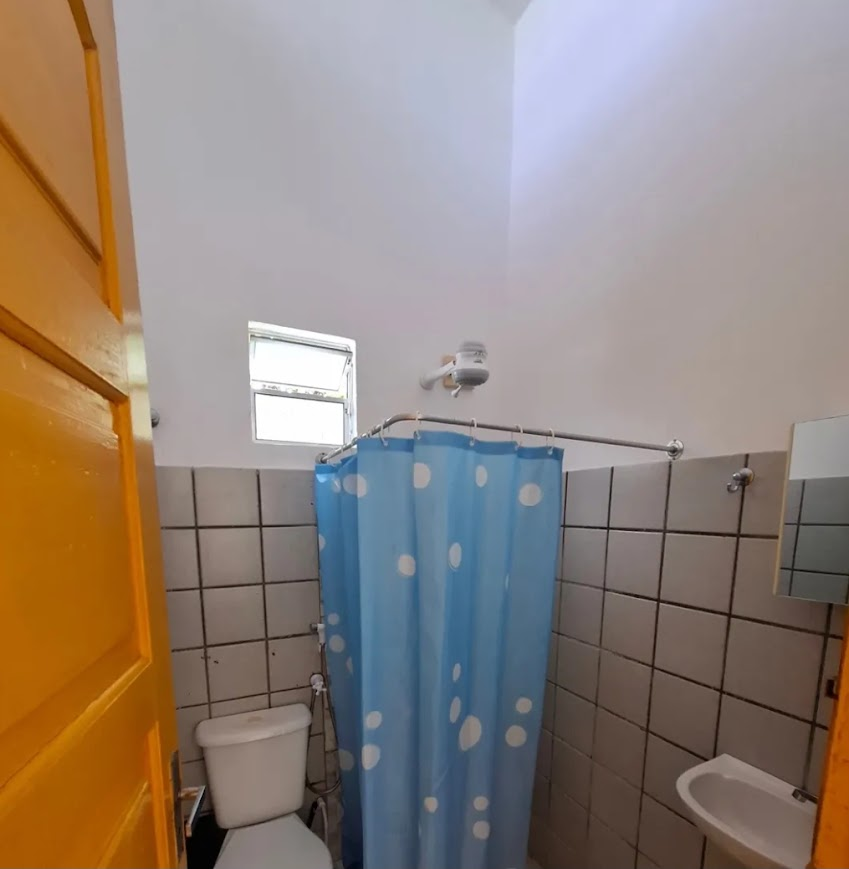
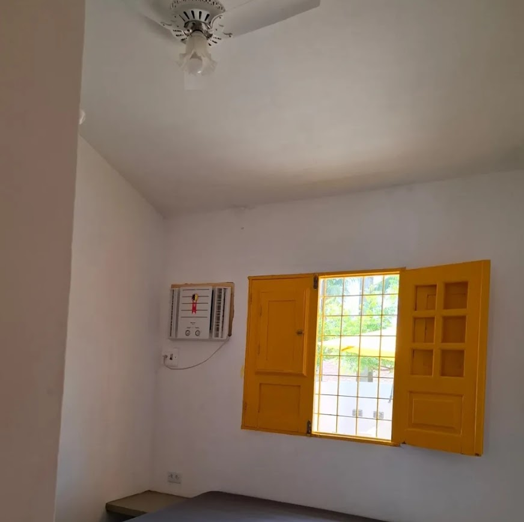
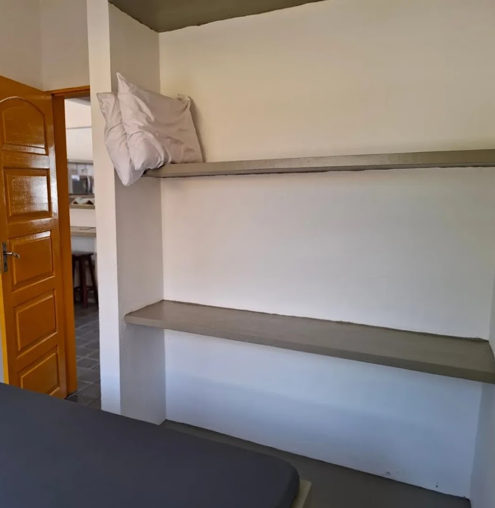
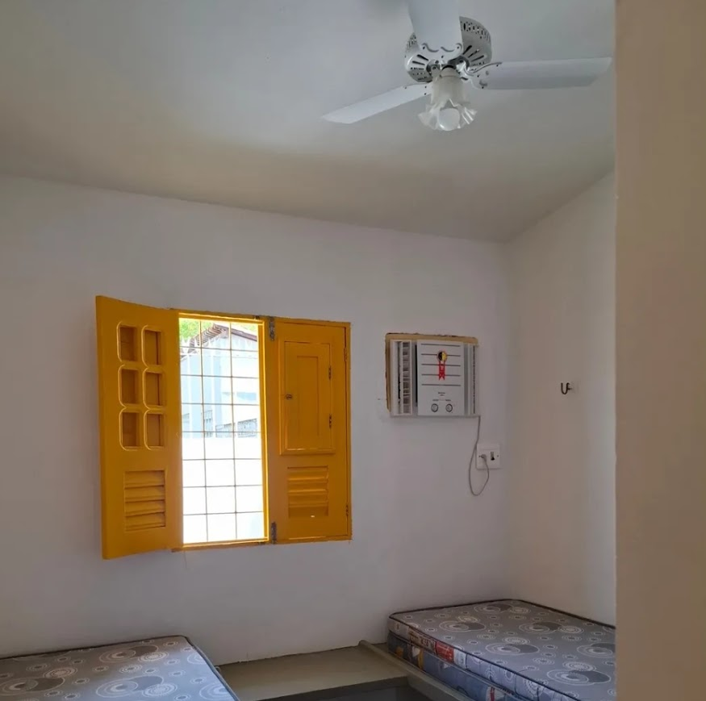
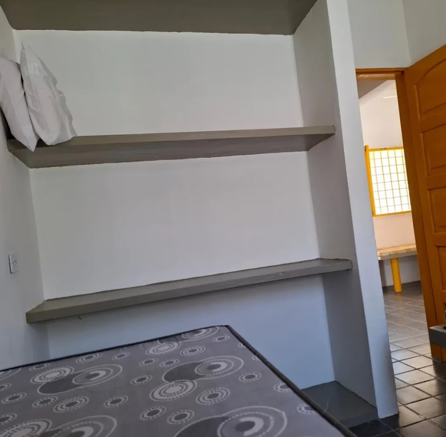
localizado na Praia das Campas, em Tamandaré - PE.
WhatsApp: (81) 99688-5913
Instagram: @chalesdascampas_tamandare.pe